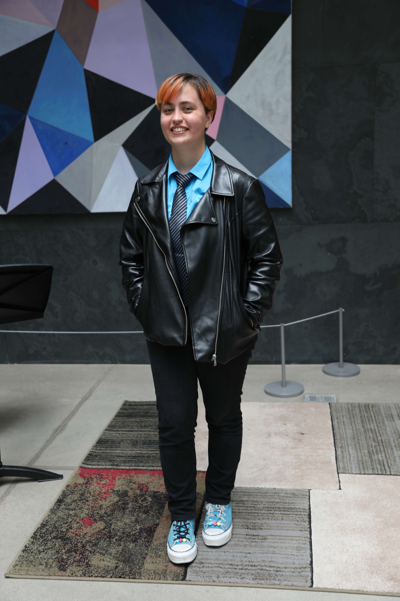

Meenakshi's activities?

Hey y'all! I'm Meenakshi (they/she, they preferred), a first-year math grad student at Princeton. Currently I'm still exploring what kinds of math I'll focus on for my PhD, but I have interests in algebraic geometry, topology, operator algebras, number theory, and mathematical physics (and probably more!). I'm really excited to have the chance to explore all of this though! Besides math (and physics) related things, I love to read (pretty much anything, but especially scifi/ fantasy on my own), write and draw when I have time, and play games. I also like rock climbing and have recently tried a bit of swing, but I currently have a foot injury. Also also: I joined SPEAR (students for prison education, abolution, and reform), and definitely recommend getting involved if you're interested!
Email: meenakshi [at] princeton [dot] edu
I'm also currently co-organizing the first-year seminar. Go to the linked site to see more details!
You can learn more about me in the other tabs (I'm only building the site rn tho, so some parts are probably a bit broken).